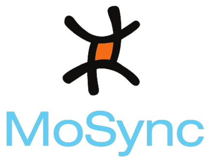

Wormhole
Welcome to Wormhole Demo!
View Device Information
PhoneGap Compatible Sensors
W3C Sensors
Capture
File Storage
PhoneGap Compatible Notifications
Back
Device Information
Platform: Android
version: 2.3.3
Device Name: GT-I9100
Phonegap Sensors
Back
X:
Y:
Z:
Toggle Accelerometer
Latitude:
Longitude:
Altitude:
Toggle GeoLocation
Heading:
Toggle Compass
Sensors 2
Back
X:
Y:
Z:
Toggle Accelerometer
X:
Y:
Z:
Toggle Magnetic Field
Orientation:
Toggle Orientation
Proximity:
Toggle Proximity
X:
Y:
Z:
Toggle Gyroscope
Phonegap Capture
Back
Capture video

Capture picture
Phonegap Notifications
Back
Beep
Vibrate
File storage
Back
File
Back
Rename
Save